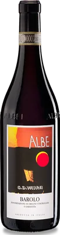

G.D. Vajra · Vergne, Barolo (CN)
Barolo Albe
Barolo DOCG · rosso
Selezione in aggiornamento, in attesa della lista definitiva del titolare: questo vino è un esempio documentato, non ancora una bottiglia confermata della Cave.

Provenienza
- Denominazione
- Barolo DOCG
- Produttore
- G.D. Vajra
- Zona
- Langhe · Barolo · Piemonte, Italia
- Uve
- Nebbiolo 100%
- Annata
- Scheda consultata: annata 2022. Annata in cantina: da confermare.
Secondo le fonti
- Vigneti
- Assemblaggio di vigneti del Barolo DOCG in quota, tra 380 e 480 m s.l.m., esposti da sud-sud-est a sud-ovest [1]
- Coltivazione
- Vigneti a certificazione biologica [1]
- Vinificazione
- In tini verticali; macerazione media di 36 giorni nel 2022, malolattica spontanea in acciaio [1]
- Affinamento
- 22 mesi in botti grandi di rovere di Slavonia da 40, 50 e 75 hl (annata 2022) [1]
La nota del bancone
Ancora da scrivere. Le impressioni di assaggio arriveranno da Antoine: qui non inventiamo note a suo nome.
Disponibilità
Da confermare. Non vendiamo online e questa pagina non dice ancora cosa c’è in cantina: per saperlo, e per il prezzo, chiedi ad Antoine.
Una telefonata non è una prenotazione confermata.
Fonti
- G.D. Vajra, Fact sheet del produttore, annata 2022 (PDF, in inglese): apri la fonte. Consultata il 22 settembre 2026.
- G.D. Vajra, Pagina del vino: apri la fonte. Consultata il 22 settembre 2026.
Etichetta e immagini ufficiali: pagina del produttore. Nomi e marchi appartengono al produttore.